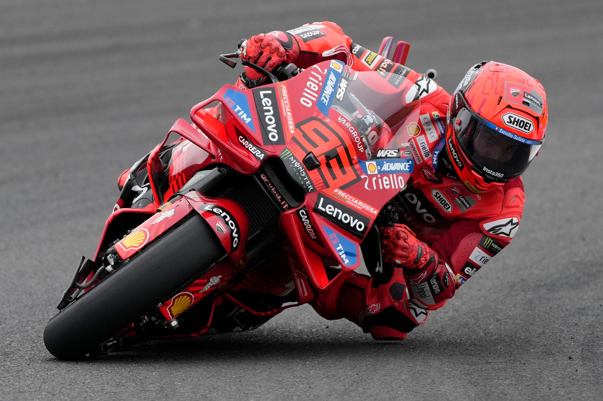
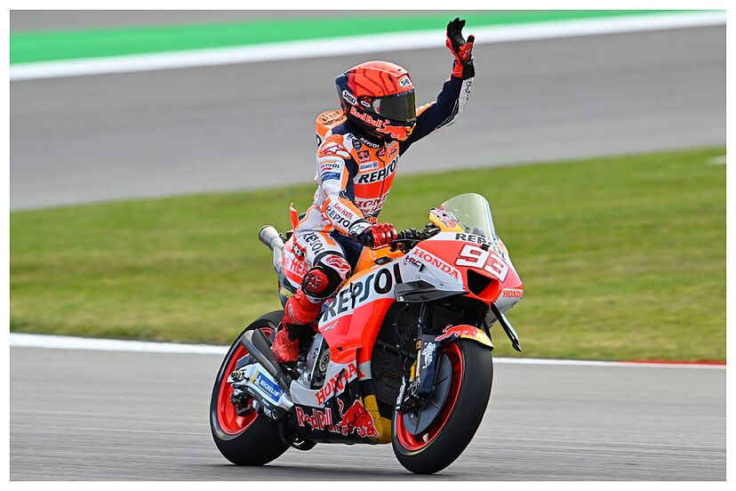

Galería y Curiosidades del Motociclismo
Galería de Imágenes
Explora algunas imágenes espectaculares del mundo del motociclismo.


Curiosidades del Mundo MotoGP
¿Sabías que...?
- El récord de más títulos de MotoGP lo tiene Giacomo Agostini con 8 títulos.
- Las motos de MotoGP pueden superar los 360 km/h en rectas largas.
- Marc Márquez ganó su primer mundial de MotoGP con solo 20 años.
- Las motos de competición no tienen arranque eléctrico, se encienden empujando o con máquinas externas.